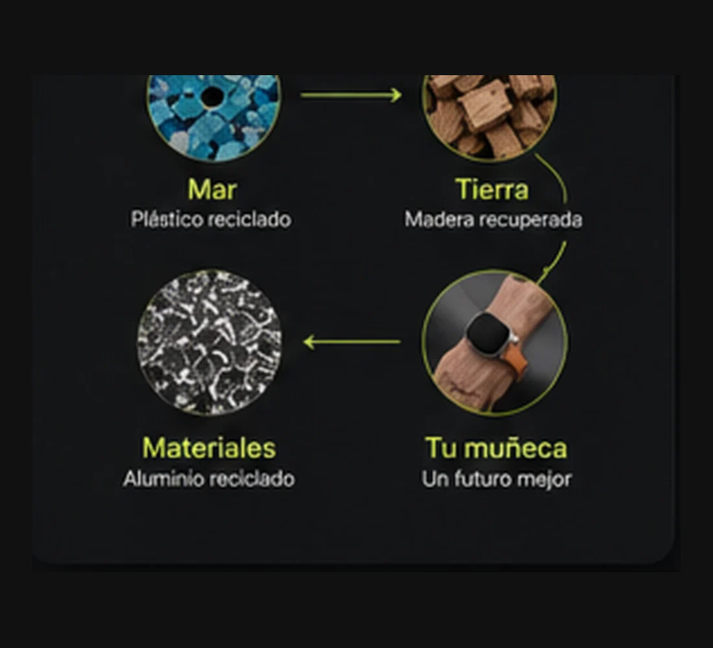

De dónde sale cada pieza.
Cada pieza de tu reloj lleva grabado un código de lote. Con él puedes ver de qué material es, de dónde viene y qué pasa con ella cuando ya no la quieras.
Datos de ejemplo del proyecto. CICLO es una empresa ficticia del Grupo 6 (UIE). Los porcentajes, orígenes y lotes de esta página son inventados para enseñar cómo funcionaría; no son datos reales ni certificados.
Seis pasos, y vuelta a empezar.
- 1
Recogida
Chatarra de aluminio, redes de pesca, retales de tela o madera de talleres. Se recoge cerca y se apunta de dónde viene.
- 2
Clasificación
Se separa por tipo y se limpia. Aquí se abre el lote y se le da su código.
- 3
Transformación
Se funde, tritura, hila o prensa hasta tener material listo para fabricar.
- 4
Pieza
Se hace la caja, la esfera, la correa o la batería, y se graba el código de lote.
- 5
Uso
Llevas el reloj. Si algo se rompe o te cansas, cambias solo esa pieza.
- 6
Devolución o recambio
La pieza vuelve a CICLO y su material empieza otro recorrido.

Qué lleva cada pieza.
Origen genérico: decimos el tipo de proveedor y la zona, sin nombres de empresas. El porcentaje es el contenido reciclado de la pieza.
Cargando las fichas…
Escribe el código de tu lote.
Está grabado en la pieza, con este formato: CW-XXXX-YYYY. Puedes escribirlo en minúsculas o sin guiones.
Aquí saldrá la ficha de tu pieza.
Lo que prometemos, y lo que aún no.
Queremos registrar el lote de todas las piezas. Hoy es el plan del proyecto: aún no hay certificaciones, y las normas que miramos (como el estándar de contenido reciclado y el pasaporte digital de producto europeo) son objetivos, no algo ya cumplido.
Datos de ejemplo del proyecto. Empresa ficticia: no se venden productos reales.